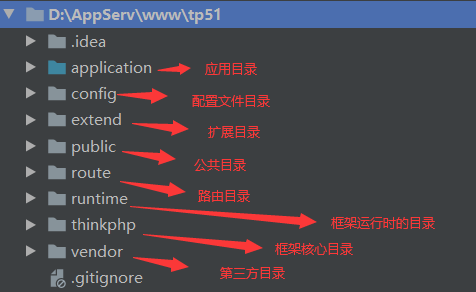

这一切的一切都得从“Hello world”说起！！！
有很多东西在thinkPHP的官方开发文档上其实都有讲到，我在这里只是想记录自己每天坚持学习PHP的情况，今天接触ThinkPHP的路由，路由这一块可以更好的隐藏我们网站的结构，让我们的网站更安全，这是路由带给我们的一些好处。下面来记录ThinkPHP中的路由这一块主要内容。
在ThinkPHP框架中找到路由目录下的php文件，系统默认会给我们一个route.php的这个文件，当然我们也能在这个目录下创建自己的一个路由文件，系统会自动加载这个目录下的所有文件
这个就是路由的文件

/**
*配置一个简单的路由规则 第一个参数自定义 第二个参数依次是模块/控制器/方法
* ------->路由执行是从方法开始找，接着找控制器，再是模块 若不填写：系统默认使用配置文件中所配置的默认
* 可以在配置文件app.php中配置默认的模块、控制器和方法
*/
Route::rule('good','index/index/index');这时在浏览器中只需要输入“http://域名/good” 就能找到指定的模块下的控制器中的方法，也可在后方加.html，需要在配置文件app.php中设置URL伪静态的后缀，默认为html
//动态路由
//id为动态获取的，也就是在good/后面随意输入都可以路由到index/index/index
Route::rule('good/:id','index/index/index');
//当然id里面的值也是可以获取的
//在控制器中使用门面下的Request中的param('id')可以获取id的值
Route::rule('good/[:id]','index/index/index');
//路由地址 直接路由到操作方法
//看起来似乎和前面的没什么不同，本质的区别是直接执行某个控制器的方法，不需要去解析模块/控制器/操作方法这些，同时不会去初始化模块
Route::rule('good','@index/index/index');比如说重定向到百度：
//重定向到百度
Route::rule('baidu','https://www.baidu.com');请求类型通常有:post、get、delete、put、等请求，路由请求类型可以指定某些请求来请求某个模块下的某个控制器中的某个方法
//post请求默认模块/默认控制器/默认方法
Route::rule('good','','post');
Route::post('good','');
//get、delete等请求都与上类似
//设置多个请求类型
Route::rule('good','','post|get|delete|put');下表从官方文档拿下来的一个参数、说明和对应的方法名
| 参数 | 说明 | 方法名 |
|---|---|---|
| method | 请求类型检测，支持多个请求类型 | method |
| ext | URL后缀检测，支持匹配多个后缀 | ext |
| deny_ext | URL禁止后缀检测，支持匹配多个后缀 | denyExt |
| https | 检测是否https请求 | https |
| domain | 域名检测 | domain |
| before | 前置行为（检测） | before |
| after | 后置行为（执行） | after |
| merge_extra_vars | 合并额外参数 | mergeExtraVars |
| complete_match | 是否完整匹配路由 | completeMatch |
| model | 绑定模型 | model |
| cache | 请求缓存 | cache |
| param_depr | 路由参数分隔符 | depr |
| ajax | Ajax检测 | ajax |
| pjax | Pjax检测 | pjax |
| response | 绑定response_send行为 | response |
| validate | 绑定验证器类进行数据验证 | validate |
| header | 设置Response的header信息 | header |
| append | 追加额外的参数（5.1.5+） |
append |
| middleware | 注册路由中间件（5.1.6+） |
middleware |
| merge_rule_regex | 合并路由规则（V5.1.6+） |
mergeRuleRegex |
| filter | 请求变量过滤（V5.1.16+） |
filter |
这里举个路由参数的例子：
Route::rule('good','')
->ext('html')
->https(false);
//ext()设置伪静态后缀
//https()是否验证https请求举个hello world的栗子，这一切的一切都得从“Hello world”说起
//闭包支持
Route::rule('good',function (){
return "Hello world";
});配置好路由之后给这个路由一个名字，然后在其它的地方调用助手函数url()或者使用门面下的build方法可获取对应的url地址
Route::rule('good','')->name('new_good');
//通过助手函数的方式获取url
//url('new_good');
//通过门面下的Url中的build方法
//Url::build('new_good');